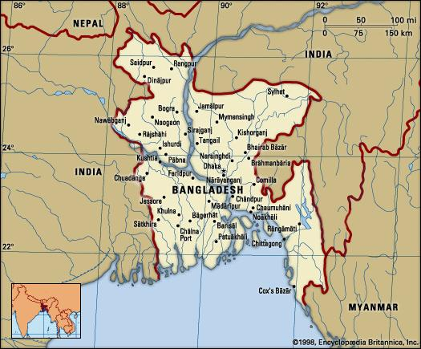

Thu, December 10, 2017
BANGLADESH
Bangladesh, country of south-central Asia, located in the delta of the Padma (Ganges [Ganga]) and Jamuna (Brahmaputra) rivers in the northeastern part of the Indian subcontinent.
BANGLADESH
The riverine country of Bangladesh (“Land of the Bengals”) is one of the most densely populated countries in the world, and its people are predominantly Muslim. As the eastern portion of the historical region of Bengal, the area once formed, along with what is now the Indian state of West Bengal, the province of Bengal in British India. With the partition of India in 1947, it became the Pakistani province of East Bengal (later renamed East Pakistan), one of five provinces of Pakistan, separated from the other four by 1,100 miles (1,800 km) of Indian territory. In 1971 it became the independent country of Bangladesh, with its capital at Dhaka.

Geographical Location of Bangladesh
Bangladesh is a low-lying, riverine country located in South Asia with a largely marshy jungle coastline of 710 km (441 mi) on the northern littoral of the Bay of Bengal. Formed by a delta plain at the confluence of the Ganges (Padma), Brahmaputra (Jamuna), and Meghna Rivers and their tributaries, Bangladesh’s alluvial soil is highly fertile, but vulnerable to flood and drought. Hills rise above the plain only in the Chittagong Hill Tracts in the far southeast and the Sylhet division in the northeast. Straddling the Tropic of Cancer, Bangladesh has a tropical monsoon climate characterized by heavy seasonal rainfall, high temperatures, and high humidity. Natural disasters, such as floods, tornadoes, and tidal bores affect the country yearly. Bangladesh also is affected by major cyclones, on average 16 times a decade. A cyclone struck the southeastern coast in May 1991, killing 136,000 people. Cyclone Sidr struck the southwestern coast on November 15, 2007, affecting not only the coastal districts of the administrative division Khulna but also about half of the tropical forest Sundarbans.
Flag of Bangladesh
National Anthem of Bangladesh
Official name
Gana Prajatantri Bangladesh (People’s Republic of Bangladesh)
Form of government
Unitary multiparty republic with one legislative house (Parliament [3501])
President
Abdul Hamid
Head of government
Prime Minister: Sheikh Hasina Wazed (Wajed)
Capital
Dhaka
Official Religion
Islam
Monetary unit
Bangladesh taka (Tk)
Official Language
Bengali (Bangla))
Population
(2017 est.) 163,477,000
Contact Us:
- Bangladesh Tourism Board
- (National Tourism Organization)
- Level-3, Building No-2, BSL Office Complex
- (Hotel InterContinental)
- 1, Minto Road. Dhaka-1000
- Phone: 0258315954
- E-mail: btbnto@gmail.com
Navigation Nam:
- Usefull link
Resources:
- Bangladesh National Portal
- Visit Bangladesh
- Board of Investment
- Civil Aviation Authority
- Tour operator association
- Bangladesh Parjatan Corporation
- Ministry of Civil Aviation & Tourism
Information Officer:
- Akter Ahmed
- Deputy Manager (Public Relation)
- Bangladesh Tourism Board